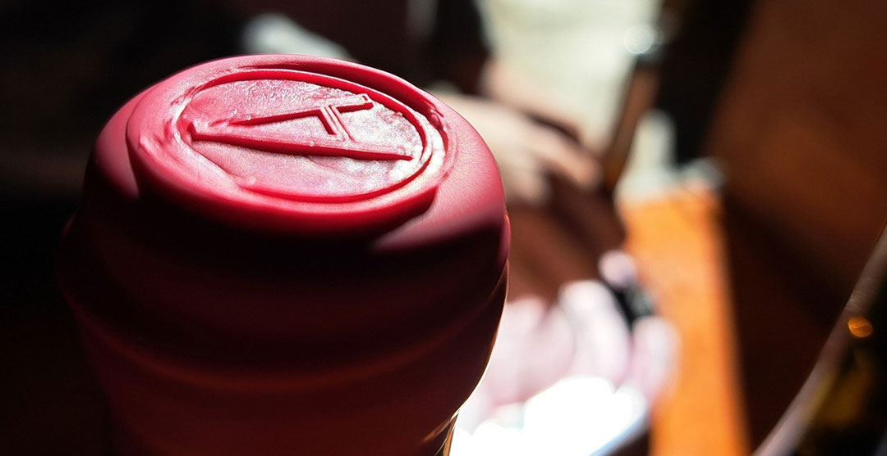

Domaine Amistat (Claira – Roussillon)

Fondé par Julien Ditté et Olivier Cazenave, le Domaine Amistat met en avant des vins naturels issus de vieilles vignes du Roussillon, travaillées en agriculture biologique. Le domaine valorise les cépages historiques du territoire, notamment le grenache.
Offre œnotouristique :
Visite du caveau + dégustation de 4 vins
Durée : ~1h30 — dégustation commentée dans le caveau du domaine.
Mas Alart (Saleilles – Plaine du Roussillon)

Domaine familial historique fondé en 1897, Mas Alart cultive un vignoble sur sols de terrasses argilo-sableuses proche de la Méditerranée. Il propose des cuvées expressives et un accueil œnotouristique bien ancré.
Offre œnotouristique :
Dégustation de vins et tapas dans le Roussillon
Durée : environ 2 h — balade dans le vignoble + dégustation de plusieurs cuvées accompagnées de tapas locales.
Domaine Bota Nostra (Estagel – Vallée de l’Agly)

Domaine familial de la Vallée de l’Agly, 6ᵉ génération, certifié bio depuis 2012. Le travail se fait en vinifications naturelles : levures indigènes, sans collage ni filtration, souffre minimal.
Offre œnotouristique :
Visite des vignes + dégustation de vins naturels
Durée : ~1h30 — visite des vignes + dégustation de 4 à 6 vins dans la cave centenaire rénovée.